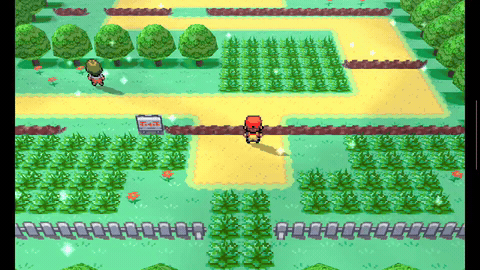

Back to builder
Verified 3D scenery
Real AYN Thor tests and captures. Only the builds listed here passed this scenery test set. Coverage remains incomplete; other candidates stay unpublished until they pass. GIFs use 10 FPS for file size and do not demonstrate runtime frame rate.
firered: changing weather
Choose Visual Climate → Automatic for calendar seasons and randomized weather; Manual provides fixed previews. Each automatic fade takes eight seconds. Native weather takes priority.
 rain
rain
snow fog
fogBuild checksums and measurement scope